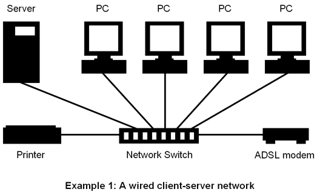

Be the Browser
HTTP overview
Talking on the Network
Network applications allow clients to talk to them by listening to a particular port number for incoming messages.
Ports can be arbitrary
- HTTP default: 80
- HTTPS default: 443
Making a Request
Request Structure
Request = Request-Line ; Section 5.1
*(( general-header ; Section 4.5
| request-header ; Section 5.3
| entity-header ) CRLF) ; Section 7.1
CRLF
[ message-body ] ; Section 4.3
Request Structure
<METHOD> <URI>[?<QUERY>] [<PROTOCOL VERSION>]
<HEADERS>
[<BODY>]
Request Structure
GET
GET /movies/search.html?year=2012&name=Norman HTTP/1.1
Host: example.com
POST (form)
POST /movies/new HTTP/1.1
Host: example.com
Content-Type: application/x-www-form-urlencoded
name=ParaNorman&year=2012
POST (json)
POST /movies/new HTTP/1.1
Host: example.com
Content-Type: application/json
{"name": "ParaNorman", "year": "2012"}
Request Structure
Query string can only hold a small amount of data.
Use it when you want to expose some type of switch/option to the user, or when you want the content of a page to be repeatable in some way.
Types of Request (Methods)
- GET
- POST
- PUT
- PATCH
- DELETE
- and many more!
POST, PUT, and PATCH requests can have a body, allowing you to push much more data to the server.
Reading the Response
Response Structure
Response = Status-Line ; Section 6.1
*(( general-header ; Section 4.5
| response-header ; Section 6.2
| entity-header ) CRLF) ; Section 7.1
CRLF
[ message-body ] ; Section 7.2
Response Structure
<STATUS>
<HEADERS>
[<BODY>]Response Structure
HTTP/1.0 200 OK
Server: SimpleHTTP/0.6 Python/2.6.4
Date: Mon, 30 Dec 2013 19:06:51 GMT
Content-type: text/html
Content-Length: 178
Last-Modified: Mon, 30 Dec 2013 19:06:20 GMT
<!DOCTYPE html>
<html>
<head>
<title>Simple little page</title>
</head>
<body>
<h1>Hello there!</h1>
<p>Welcome to my <strong>simple</strong> html page.</p>
</body>
</html>
HTTP Status Codes
Status codes are used by web servers to communicate the outcome of a request.
The status code appears on the 1st line (the status line) of the response, and can be thought of as how you might use an exit code for a CLI application.
HTTP Status Codes
HTTP response codes for dummies. 50x: we fucked up. 40x: you fucked up. 30x: ask that dude over there. 20x: cool.
— Dana McCallum (@DanaDanger) March 23, 2012Notable Statuses
Rendering
- Stylesheets
- Images
- Layout
- Scripts
HTTP Request/Response per asset
Loading assets like stylesheets, images and scripts go through their own request/response cycles.
There is usually a cap on the number of simultaneous requests a browser can make.
Maximize Concurrency
Stylesheets and images can download in parallel.
Best practice is to link to these assets as early in the document as possible.
Loading Scripts
Scripts are executed by the browser as they are loaded.
Scripts often mutate the document after the fact, and commonly need to wait for the entire DOM to be established before they can begin their work.
Best practice is to put your scripts at the very bottom of the document so the page can start laying itself out beforehand.
Script Execution in the Browser
The assets that we link to from our document must be web accessible.
Important to note that Javascript runs in the browser as part of additional requests when linked via a script tag src attribute.
DOM Mutation
(function ($) {
'use strict';
// finds a strong elem inside the parent and sets it's text to msg
window.setMessage = function setMessage($parent, msg) {
$parent.find('strong').text(msg);
};
var $para = $('p');
window.setMessage($para, 'MUTATED');
$para.append($(' ', {src: 'images/toxie.jpg'}));
})(jQuery);
', {src: 'images/toxie.jpg'}));
})(jQuery);
The Browser is a Sandbox
There are a number of cases where the browser may prevent you from doing things you'd like to do.
- Referencing insecure content in a secure document.
- Linking to assets using non-network protocols (for example, file://).
- Using JavaScript to make a request to another application (this is called a cross origin resource sharing, or CORS).